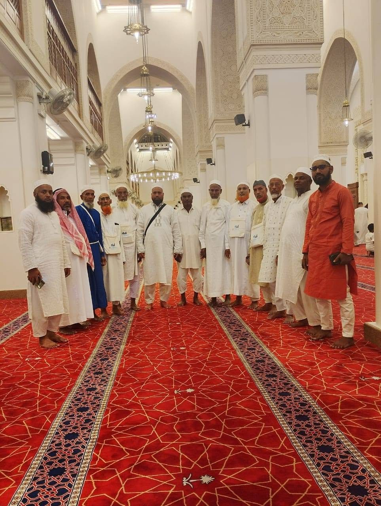
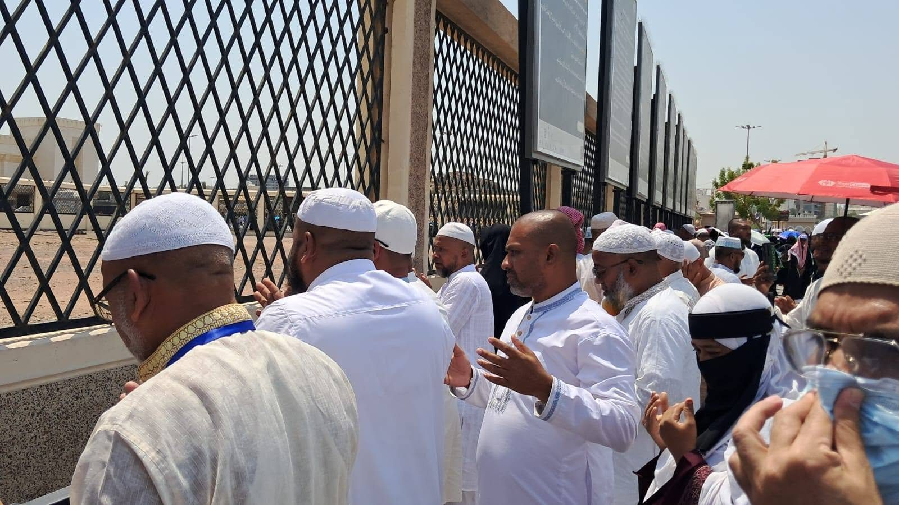

ওমরাহ গাইড
একই সফরে একাধিকবার ওমরাহ করা কি জায়েজ?
একই সফরে দ্বিতীয় ওমরাহ, ইহরাম ও হিল এলাকায় যাওয়া নিয়ে সাধারণ আলোচনা।
Read article / বিস্তারিত পড়ুনPractical articles for Umrah preparation, religious tourism and international travel. Religious content is educational and should be checked with a qualified scholar where needed; travel requirements can change.
বাংলা: ওমরাহ প্রস্তুতি, ধর্মীয় পর্যটন ও আন্তর্জাতিক ভ্রমণ নিয়ে সহায়ক লেখা। ধর্মীয় বিধান ও পরিবর্তনশীল ভ্রমণ নিয়ম নির্ভরযোগ্য উৎস থেকে যাচাই করুন।

একই সফরে দ্বিতীয় ওমরাহ, ইহরাম ও হিল এলাকায় যাওয়া নিয়ে সাধারণ আলোচনা।
Read article / বিস্তারিত পড়ুনইহরাম, তাওয়াফ, সাঈ এবং চুল কাটার ধাপ সম্পর্কে প্রাথমিক ধারণা।
Read article / বিস্তারিত পড়ুন
ভিসা, আবাসন, ফ্লাইট ও বর্তমান নির্দেশনা যাচাইয়ের জন্য ব্যবহারিক তালিকা।
Read article / বিস্তারিত পড়ুন
নারীদের ইহরাম, পোশাক, নিয়ত ও তালবিয়া সম্পর্কে একটি সাধারণ গাইড।
Read article / বিস্তারিত পড়ুনরমজানে ওমরাহর ফজিলত, প্রস্তুতি ও ইবাদতের পরিকল্পনা।
Read article / বিস্তারিত পড়ুনওমরাহর ধারাবাহিক ধাপ ও পরিচিত দোয়ার সংক্ষিপ্ত পরিচিতি।
Read article / বিস্তারিত পড়ুন